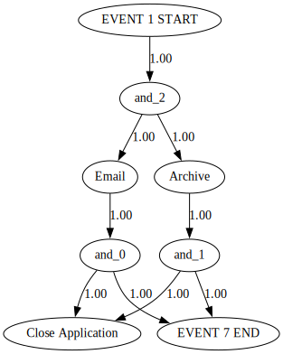

Process mining and causal discovery example
[1]:
import sys
import os
# Get the current directory (where the notebook is located)
notebook_dir = os.getcwd()
# Get the parent directory
parent_dir = os.path.abspath(os.path.join(notebook_dir, os.pardir))
# Get two directories up
two_dirs_up = os.path.abspath(os.path.join(parent_dir, os.pardir))
# Add the project directory to the Python path
sys.path.append(two_dirs_up)
[2]:
import warnings
warnings.filterwarnings('ignore', category=RuntimeWarning)
warnings.filterwarnings('ignore', category=UserWarning)
[3]:
import sax
from sax.process_data.formatters.xes_formatter import XESFormatter
from sax.process_data.formatters.csv_formatter import CSVFormatter
from sax.utils.constants import Constants
from lingam.utils import make_dot
from sax.process_data.tabular_data import TabularEventData
from pm4py.objects.conversion.log import converter as log_converter
import sax.process_mining.process_mining as pm
[4]:
fileName = "C:\Data\Automation\SAX\Data\collider expirementation\collider non-overlapping runs U[5,7], U[9,11]\simulated_run_non_overlapping_gen.csv"
dataframe = pm.import_csv(fileName,timestamp_format="%Y-%m-%d %H:%M:%S.%f")
[5]:
dataframe.getData()
[5]:
| Id | Source | Type | Timestamp | Resource | Role | |
|---|---|---|---|---|---|---|
| 0 | 2182 | EVENT 1 START | assign | 2023-02-24 12:02:25.523000+00:00 | Owner2 | Administrator |
| 1 | 2182 | EVENT 1 START | start | 2023-02-24 12:02:25.523000+00:00 | Owner2 | Lawyer |
| 2 | 2182 | EVENT 1 START | complete | 2023-02-24 12:02:25.523000+00:00 | Owner1 | Administrator |
| 3 | 2182 | assign | 2023-02-24 12:02:25.523000+00:00 | Owner3 | Lawyer | |
| 4 | 2182 | Archive | assign | 2023-02-24 12:02:25.523000+00:00 | Owner1 | Technician |
| ... | ... | ... | ... | ... | ... | ... |
| 149980 | 686 | Close Application | start | 2023-02-03 10:57:38.527000+00:00 | Owner3 | Administrator |
| 149981 | 686 | Close Application | complete | 2023-02-03 10:57:44.397227+00:00 | Owner3 | Administrator |
| 149982 | 686 | EVENT 7 END | assign | 2023-02-03 10:57:44.397227+00:00 | Owner3 | Lawyer |
| 149983 | 686 | EVENT 7 END | start | 2023-02-03 10:57:44.397227+00:00 | Owner3 | Lawyer |
| 149984 | 686 | EVENT 7 END | complete | 2023-02-03 10:57:44.397227+00:00 | Owner1 | Lawyer |
149985 rows × 6 columns
[6]:
print('Mandatory Properties of the parsed event log: \n',dataframe.getMandatoryProperties())
print('Optional properties of the parsed event log: \n',dataframe.getOptionalProperties())
Mandatory Properties of the parsed event log:
{'case:concept:name': 'Id', 'concept:name': 'Source', 'time:timestamp': 'Timestamp', 'lifecycle:transition': 'Type'}
Optional properties of the parsed event log:
{'Resource': 'Resource', 'Role': 'Role'}
[7]:
event_log = dataframe.filterLifecycleEvents(['complete'])
print(event_log)
Data: Id Source Type Timestamp \
2 2182 EVENT 1 START complete 2023-02-24 12:02:25.523000+00:00
7 2182 Email complete 2023-02-24 12:02:32.268000+00:00
8 2182 Archive complete 2023-02-24 12:02:36.506000+00:00
11 2182 Close Application complete 2023-02-24 12:02:43.253164+00:00
14 2182 EVENT 7 END complete 2023-02-24 12:02:43.253164+00:00
... ... ... ... ...
149972 686 EVENT 1 START complete 2023-02-03 10:57:28.275000+00:00
149977 686 Email complete 2023-02-03 10:57:34.142000+00:00
149978 686 Archive complete 2023-02-03 10:57:38.527000+00:00
149981 686 Close Application complete 2023-02-03 10:57:44.397227+00:00
149984 686 EVENT 7 END complete 2023-02-03 10:57:44.397227+00:00
Resource Role
2 Owner1 Administrator
7 Owner1 Lawyer
8 Owner1 Administrator
11 Owner2 Administrator
14 Owner2 Administrator
... ... ...
149972 Owner3 Administrator
149977 Owner2 Technician
149978 Owner1 Lawyer
149981 Owner3 Administrator
149984 Owner1 Lawyer
[49995 rows x 6 columns],
Mandatory properties: {'case:concept:name': 'Id', 'concept:name': 'Source', 'time:timestamp': 'Timestamp', 'lifecycle:transition': 'Type'}
Optional properties: {'Resource': 'Resource', 'Role': 'Role'}
[8]:
import sax.process_mining.process_mining as pm
net = pm.discover_heuristics_net(dataframe)
pm.view_heuristics_net(net)

[9]:
#transform the RawEventData to tabular representation
transposed_df = dataframe.transposeToTabular()
transposed_df.getData()
[9]:
| Id | EVENT 1 START | EVENT 1 START__Resource | EVENT 1 START__Role | Email__Resource | Email__Role | Archive | Archive__Resource | Archive__Role | Close Application | Close Application__Resource | Close Application__Role | EVENT 7 END | EVENT 7 END__Resource | EVENT 7 END__Role | ||
|---|---|---|---|---|---|---|---|---|---|---|---|---|---|---|---|---|
| 0 | 0 | 2023-01-25 09:00:00+00:00 | Owner3 | Lawyer | 2023-01-25 09:00:06.406000+00:00 | Owner2 | Administrator | 2023-01-25 09:00:10.743000+00:00 | Owner3 | Administrator | 2023-01-25 09:00:17.152773+00:00 | Owner2 | Lawyer | 2023-01-25 09:00:17.152773+00:00 | Owner3 | Administrator |
| 1 | 1 | 2023-01-25 09:01:12.348000+00:00 | Owner2 | Lawyer | 2023-01-25 09:01:18.959000+00:00 | Owner3 | Lawyer | 2023-01-25 09:01:21.402000+00:00 | Owner1 | Administrator | 2023-01-25 09:01:28.016404+00:00 | Owner3 | Administrator | 2023-01-25 09:01:28.016404+00:00 | Owner3 | Administrator |
| 2 | 2 | 2023-01-25 09:07:17+00:00 | Owner1 | Lawyer | 2023-01-25 09:07:22.413000+00:00 | Owner2 | Technician | 2023-01-25 09:07:27.131000+00:00 | Owner2 | Administrator | 2023-01-25 09:07:32.547069+00:00 | Owner2 | Lawyer | 2023-01-25 09:07:32.547069+00:00 | Owner3 | Technician |
| 3 | 3 | 2023-01-25 09:10:59.356000+00:00 | Owner1 | Administrator | 2023-01-25 09:11:05.842000+00:00 | Owner2 | Lawyer | 2023-01-25 09:11:10.304000+00:00 | Owner3 | Technician | 2023-01-25 09:11:16.793951+00:00 | Owner3 | Lawyer | 2023-01-25 09:11:16.793951+00:00 | Owner2 | Technician |
| 4 | 4 | 2023-01-25 09:12:49.247000+00:00 | Owner2 | Technician | 2023-01-25 09:12:55.875000+00:00 | Owner1 | Lawyer | 2023-01-25 09:12:59.781000+00:00 | Owner3 | Lawyer | 2023-01-25 09:13:06.411520+00:00 | Owner1 | Administrator | 2023-01-25 09:13:06.411520+00:00 | Owner3 | Technician |
| ... | ... | ... | ... | ... | ... | ... | ... | ... | ... | ... | ... | ... | ... | ... | ... | ... |
| 9994 | 9994 | 2023-06-19 12:25:33.362000+00:00 | Owner2 | Administrator | 2023-06-19 12:25:40.188000+00:00 | Owner2 | Technician | 2023-06-19 12:25:43.787000+00:00 | Owner2 | Lawyer | 2023-06-19 12:25:50.615538+00:00 | Owner1 | Lawyer | 2023-06-19 12:25:50.615538+00:00 | Owner2 | Technician |
| 9995 | 9995 | 2023-06-19 12:25:55.764000+00:00 | Owner2 | Administrator | 2023-06-19 12:26:02.064000+00:00 | Owner1 | Administrator | 2023-06-19 12:26:05.662000+00:00 | Owner3 | Administrator | 2023-06-19 12:26:11.965755+00:00 | Owner1 | Administrator | 2023-06-19 12:26:11.965755+00:00 | Owner2 | Lawyer |
| 9996 | 9996 | 2023-06-19 12:27:15.155000+00:00 | Owner1 | Technician | 2023-06-19 12:27:20.729000+00:00 | Owner2 | Lawyer | 2023-06-19 12:27:25.548000+00:00 | Owner1 | Technician | 2023-06-19 12:27:31.124483+00:00 | Owner1 | Lawyer | 2023-06-19 12:27:31.124483+00:00 | Owner3 | Technician |
| 9997 | 9997 | 2023-06-19 12:30:28.224000+00:00 | Owner3 | Lawyer | 2023-06-19 12:30:33.960000+00:00 | Owner3 | Technician | 2023-06-19 12:30:38.557000+00:00 | Owner2 | Lawyer | 2023-06-19 12:30:44.296887+00:00 | Owner3 | Lawyer | 2023-06-19 12:30:44.296887+00:00 | Owner1 | Lawyer |
| 9998 | 9998 | 2023-06-19 12:31:29.774000+00:00 | Owner2 | Lawyer | 2023-06-19 12:31:36.099000+00:00 | Owner2 | Lawyer | 2023-06-19 12:31:40.249000+00:00 | Owner3 | Technician | 2023-06-19 12:31:46.576142+00:00 | Owner2 | Administrator | 2023-06-19 12:31:46.576142+00:00 | Owner2 | Administrator |
9999 rows × 16 columns
[10]:
activity_attr= transposed_df.getActivityAttributesData('Email')
print(activity_attr)
Email__Resource Email__Role
0 Owner2 Administrator
1 Owner3 Lawyer
2 Owner2 Technician
3 Owner2 Lawyer
4 Owner1 Lawyer
... ... ...
9994 Owner2 Technician
9995 Owner1 Administrator
9996 Owner2 Lawyer
9997 Owner3 Technician
9998 Owner2 Lawyer
[9999 rows x 2 columns]
[11]:
import sax.causal_process_discovery.causal_discovery as cd
result = cd.discover_causal_dependencies(dataframe)
cd.view_causal_dependencies(result)
[11]:
